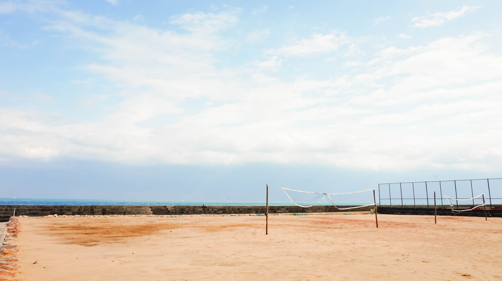

« Previous Demo:
Automatic Image Montage
Images by
ND Strupler
Back to the Codrops Article
Slicebox
A fresh 3D image slider with graceful fallback
Keelung - Never Never Land

Keelung - NTOU
Hualien - Mukumugi
Taipei - Yangmingshan
Taipei - Home
Next
Previous